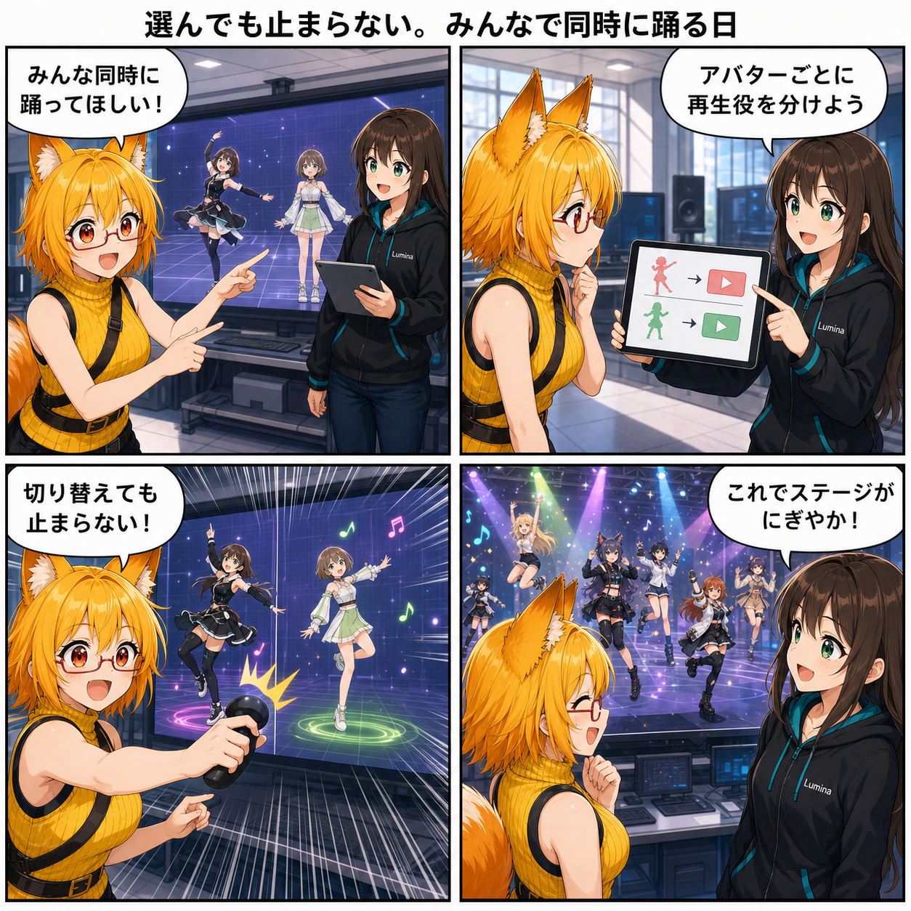

選んでも止まらない。みんなで同時に踊る日
2026-08-03 の開発日記では、複数のアバターを読み込み、それぞれのアニメーションを同時に再生できるようにした改善を中心に取り上げます。アバターライブラリのフォルダー表示や検索、UnityPackage変換の見た目・物理復元、VRミラー、描画負荷の調整まで、スタジオを使いやすく安定させる変更も進みました。

集計期間には20コミットが入り、集計終了時点の最終HEADは 96c6b90（「GPU Resident DrawerをRenderer種別ごとに適用」）でした。確認時点では締切後の未コミット差分が2ファイルありましたが、当日の実績には含めていません。
今日の主題：複数のアバターを同時に踊らせる
これまでは、操作対象として選ばれているアバターを中心にアニメーション再生を管理していました。この構成では、別のアバターへ選択を切り替えたとき、先に動かしていたアバターの再生状態まで一緒に扱われやすく、複数人のステージを作るには窮屈でした。
今回、アバターごとに専用の再生コントローラーを持つ構成へ拡張しました。選択中のアバターに対する再生・一時停止・速度などの操作はそのアバターの担当へ渡しつつ、別のアバターを選んでも、それまでの担当は再生を続けます。
実装だけでなく、「別のアバターを選んでも前のアニメーション担当が動き続ける」ことを確認するテストも追加されています。ひとりを踊らせてから次のひとりを選び、さらに別の動きを始める、といったステージ作りの土台が整いました。
アバターライブラリをフォルダーでたどる
複数人を扱うほど、「どのアバターをどこから呼び出すか」の操作も重要になります。アバターライブラリには、VAB、VRM、公式アバターを入口として表示し、子フォルダーへ移動できるブラウザーが追加されました。
検索時にはアバターだけでなくフォルダー名やパスも対象になり、現在位置から親へ戻るカードも表示されます。すべての子フォルダーを最初から平らに並べず、保存時のフォルダー構成を保ったまま探せるようになりました。
同時再生を支える性能と操作性
同じ大きな変更では、揺れもの処理の並列化条件、ライティング、ライブコメント、シーケンス再生、VR・デスクトップ双方のUIなども調整されています。複数アバターを表示して動かすと処理対象が増えるため、単に再生役を増やすだけでなく、周辺処理の負荷と操作経路もまとめて見直しました。
お気に入り保存も短時間の連続変更をまとめて書き込むデバウンス方式になり、ライブラリ操作時の不要な保存回数を減らしています。
UnityPackageからの見た目と揺れものを復元
同じ集計期間には、UnityPackageからアバターを変換するときの透過表現、正面方向、PhysBoneの復元も修正されました。lilToonの透過マスクをPlayer上で復元する処理や、Unity内のFBXと同じマテリアル順を保つ対応も加わっています。
モデルを読み込めるだけでなく、半透明部分や材質の並び、髪や服の揺れ方まで元の意図へ近づけるための改善です。変換処理とPlayer側の復元をまたぐため、共有バイナリ形式や回帰テストも一緒に更新されています。
VRミラーとGPU描画も安定化
VRモードでは、ビルド時の依存関係を整え、鏡プレビューの表示と設定を改善しました。Unity Sceneからアバター候補を探す処理も軽量化されています。
描画面では、URPのGPU Resident Drawerに必要な実行時リソースを登録し、Rendererの種類ごとに適用可否を判断する方針が追加されました。すべてへ一律に適用するのではなく、対象の特性に合わせてGPU駆動描画を使い分けるための調整です。
4コマの裏話
今回は、ろひが「みんな同時に踊ってほしい」と希望するところから始まります。ルミナがアバターごとに再生役を分ける構成を説明し、二人目へ選択を切り替えても一人目はそのままダンス。最後は複数人が同時に踊るにぎやかなステージを見て、二人で喜ぶ流れです。
今日のまとめ
2026-08-03の記事対象期間では、アニメーション再生が「選択中のひとりを動かす」構成から、「アバターごとの再生を保ちながら複数人を動かす」構成へ進みました。
フォルダー型のライブラリ、UnityPackage変換の再現性、VRミラー、GPU描画の適用方針も整い、アバターを探すところから読み込み、表示、複数人での再生まで、スタジオ全体の流れが強化された一日です。
本日のひとこと
選ぶ相手が変わっても、ステージのダンスは止まらない。